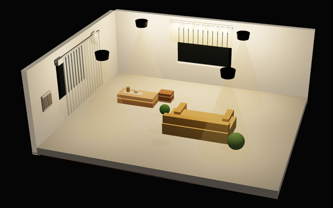

기업·공공기관·대학 맞춤 교육
AI 업무 도구부터 앱·IoT 시제품까지.참여자의 수준에 맞춰, 직접 만들며 배웁니다.
기업·공공기관
보고서 초안 · 사내 문서 검색 도구
대학·교육기관
AI 앱 · 스마트홈 · 캡스톤 시제품
창업팀·프로젝트팀
구현 계획 · 핵심 기능 시제품

최근 강의
장성균 · 개발자이자 교육자2002년부터 쌓아온 개발 경험을 수업으로 나눕니다.
교육 대상과 희망 일정을 알려주세요.해보고 싶은 과제는 함께 정해도 좋습니다.